Problem 1.14: A designer has available voltage amplifiers having an input resistance of 10 Kohm, an output resistance of 1 Kohm, and an open circuit voltage gain 10 V/V. The signal source has a 10 Kohm resistance and provides 10 mVrms signal, and it is required to provide a signal of at least 2 Vrms to a 1 kohm load.
a.) How many amplifier stages are required?
b.) What output voltage is actually obtained?
Problem 1.16: A transconductance amplifier having $R_i= 2 k\Omega$, $G_m = 40 mA/V$, and $R_O = 20 k \Omega$ is fed with a voltage source having a source resistance of $2 k\Omega$ and is loaded with a $1 k\Omega$ resistance. Find the voltage gain realized.
Problem 1.17: Figure P1.17 shows a transconductance amplifier whose output is fed back to its input. Find the input resistance $R_{in}$ of the resutling one-port network. [ hint apply a test voltage $v_x$ between the two input terminals and find the current $i_x$ drawn from the source; then $R_{in} = v_x/i_x$]

Figure P1.17